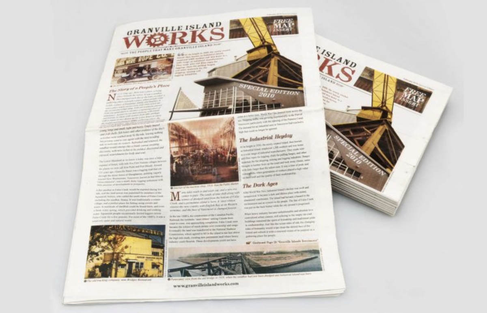

Newspaper & Magazine Spread
40,000 copies were printed initially and a second edition was commissioned. With this second edition, 60,000 were printed released in the Georgia Straight Magazine in February 2010 as an insert for the Olympics. Granville Island Works became the first marketing project funded by the the business community.
